Learn
Get started, preprocess, and simulate functional data.
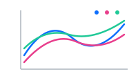
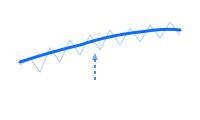
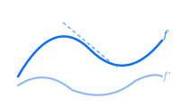
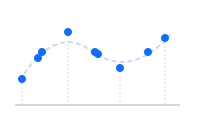
Represent
Decompose, transform, rank, and measure functional data.
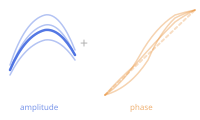
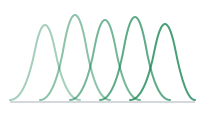
Align
Register and align curves to remove phase variability.
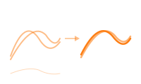
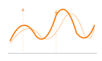
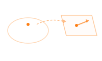
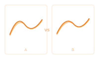
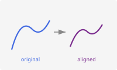
Regression
Regression, classification, and mixed models for functional data.
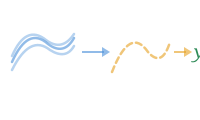
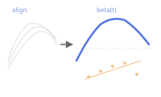
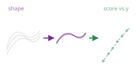
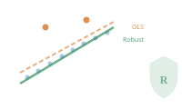
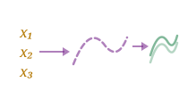
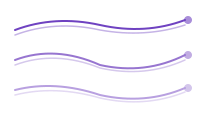
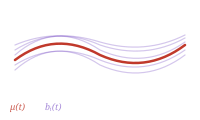
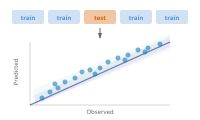
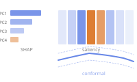
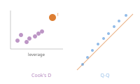
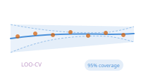
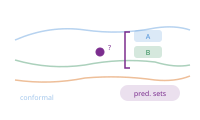
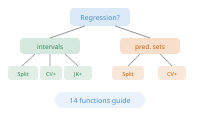
Process Monitoring
Statistical process control for functional data streams.
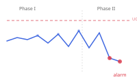
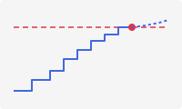
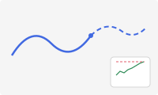
Analyze
Infer, cluster, detect outliers, and test functional data.
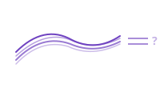
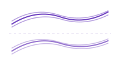
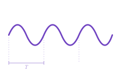
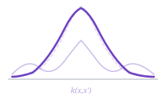
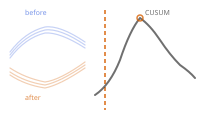